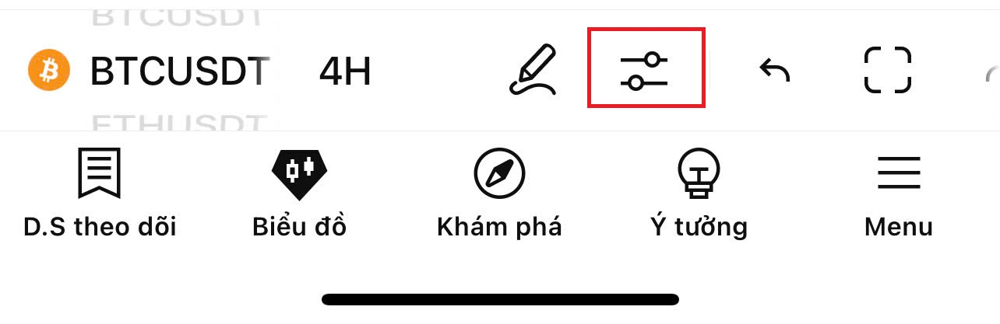
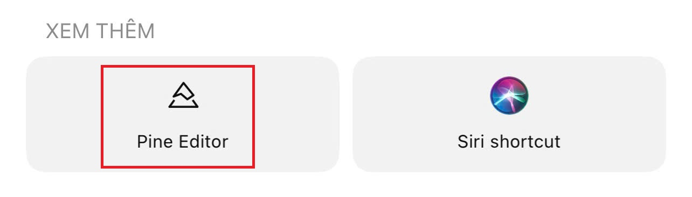

1️⃣ Truy cập tradingview.com và đăng nhập tài khoản của bạn.
2️⃣ Mở một biểu đồ bất kỳ (ví dụ BTCUSDT, VNINDEX,...)
3️⃣ Bấm vào mục Pine Editor (nằm dưới biểu đồ).
4️⃣ Xoá hết code cũ trong đó và dán đoạn mã chỉ báo bên dưới.
5️⃣ Bấm nút Add to Chart (hoặc Ctrl + Enter).
6️⃣ Chỉ báo sẽ hiển thị trên biểu đồ của bạn.
//@version=6 indicator(title="EMA200 by BmassK3", shorttitle="EMA200 BmassK3", overlay=true) ema200 = ta.ema(close, 200) plot(ema200, color=color.blue, title="EMA 200", linewidth=3)
//@version=6 indicator(title="Stochastic X2 by BmassK3 (Customizable)", shorttitle="Stoch x2 BmassK3", overlay=false) // --- Customizable Inputs for Stochastic Yellow --- k_yellow_len = input.int(14, title="%K Yellow Length", minval=1) k_yellow_smooth = input.int(3, title="%K Yellow Smoothing", minval=1) d_yellow_smooth = input.int(3, title="%D Yellow Smoothing", minval=1) // --- Stochastic Yellow Calculation --- k_yellow_raw = ta.stoch(close, high, low, k_yellow_len) k_yellow = ta.sma(k_yellow_raw, k_yellow_smooth) d_yellow = ta.sma(k_yellow, d_yellow_smooth) // --- Customizable Inputs for Stochastic Red --- k_red_len = input.int(5, title="%K Red Length", minval=1) k_red_smooth = input.int(3, title="%K Red Smoothing", minval=1) d_red_smooth = input.int(3, title="%D Red Smoothing", minval=1) // --- Stochastic Red Calculation --- k_red_raw = ta.stoch(close, high, low, k_red_len) k_red = ta.sma(k_red_raw, k_red_smooth) d_red = ta.sma(k_red, d_red_smooth) // --- Plot --- plot(k_yellow, title="%K Yellow", color=color.rgb(255, 193, 7), linewidth=1) plot(d_yellow, title="%D Yellow", color=color.rgb(255, 152, 0), linewidth=2) plot(k_red, title="%K Red", color=color.rgb(244, 67, 54), linewidth=1) plot(d_red, title="%D Red", color=color.rgb(211, 47, 47), linewidth=2) // --- Guide lines --- hline(80, "Overbought", color=color.gray) hline(50, "Middle", color=color.new(color.gray, 50)) hline(20, "Oversold", color=color.gray)